Voici un résumé bref de notre tour de France à Vélo étape par étape.
Nos débuts laborieux jusqu'au Nord
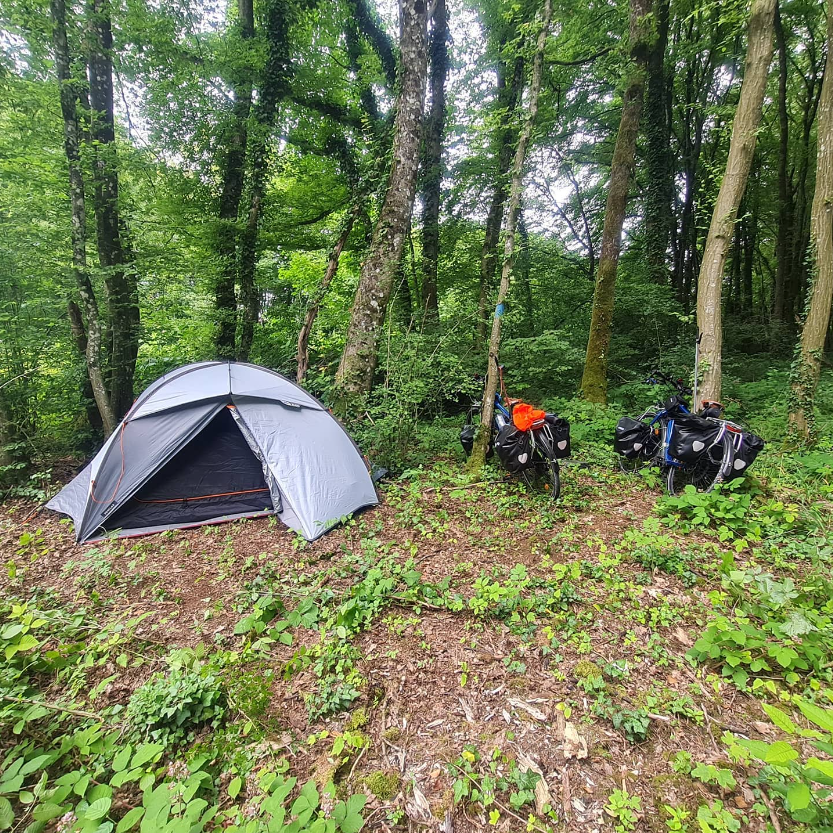
Premier jour de vélo pour nous
aujourd'hui ! Nous avons démarré de Rombas et officiellement
de Joeuf avec le support de la famille et l'association
FER Ensemble ! Nous sommes arrivés entier à Longuyon la pluie nous
a empêché de continuer plus loin! Nous reprendrons la route demain
en espérant que la pluie soit partie ! On est content !!
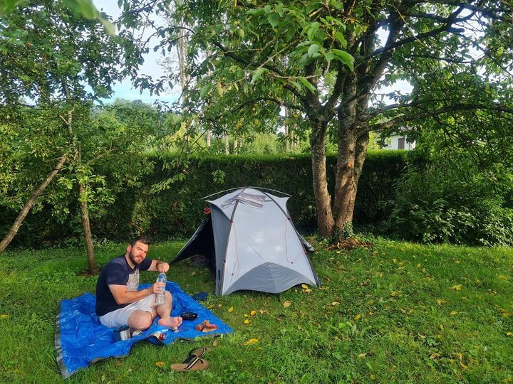
Deuxième étape de notre tour de France à vélo ! Nous voilà à Sedan,
68km de parcouru aujourd'hui ! Nous dormons dans le jardin d'un couple
super gentil qui nous a accueilli ce soir !
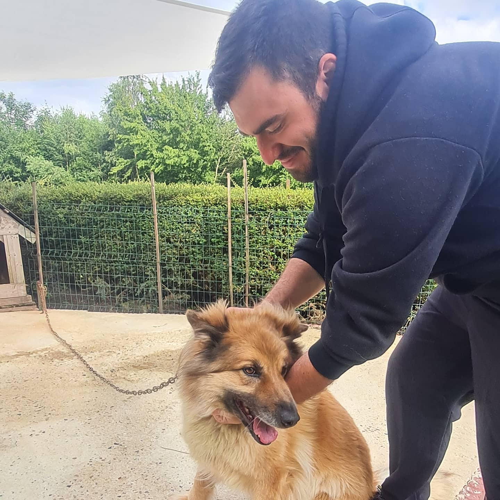
Nous sommes arrivés à Hirson dans l'après midi ! En passant par
Charleville-Mézières sous la pluie !!! Ce soir nous sommes accueilli par
Marie-Jeanne, Éric et Julien qui nous ont raconté un peu l'histoire de leur
ville ! Petite maison de campagne très charmante ! On s'est même fait une
copine Mitsi !!!
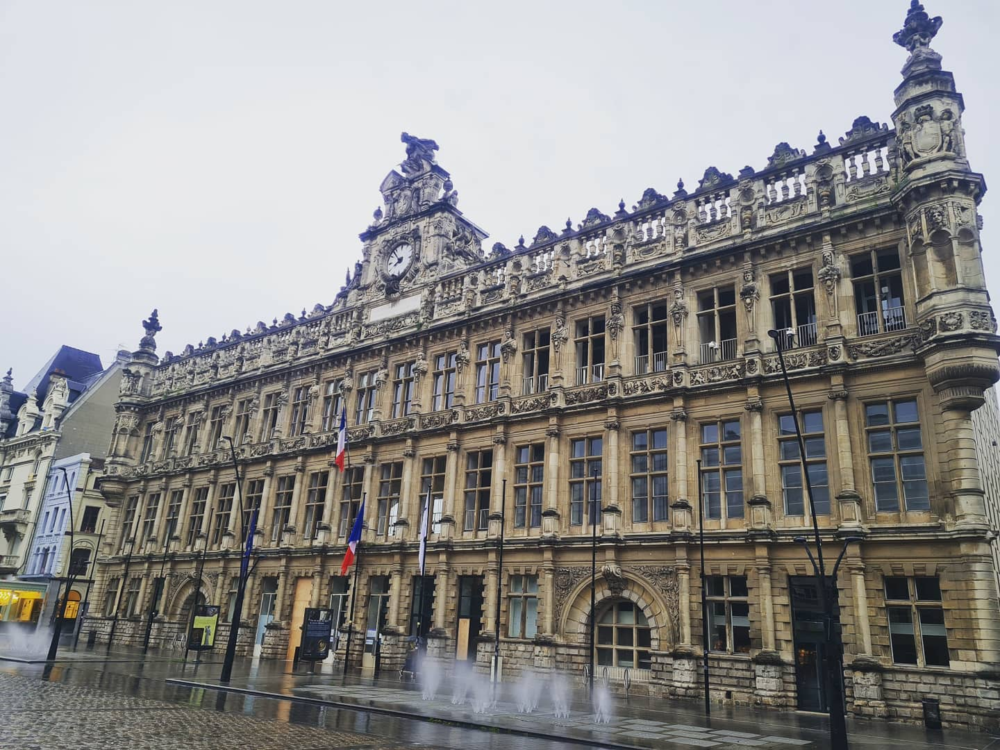
Nous avons beaucoup roulé aujourd'hui sous la pluie pour arriver dans le
airbnb que nous avions réservé proche de Valenciennes ! Une ville qui se
meurt malheureusement! Nous avons posé nos vélos juste pour aller en ville
et au retour surprise plus de tram pour rentrer ! Alors auto-stop merci Abdel
de s'être arrêté pour nous déposer à notre airbnb on avait en tout 2h de
marche !
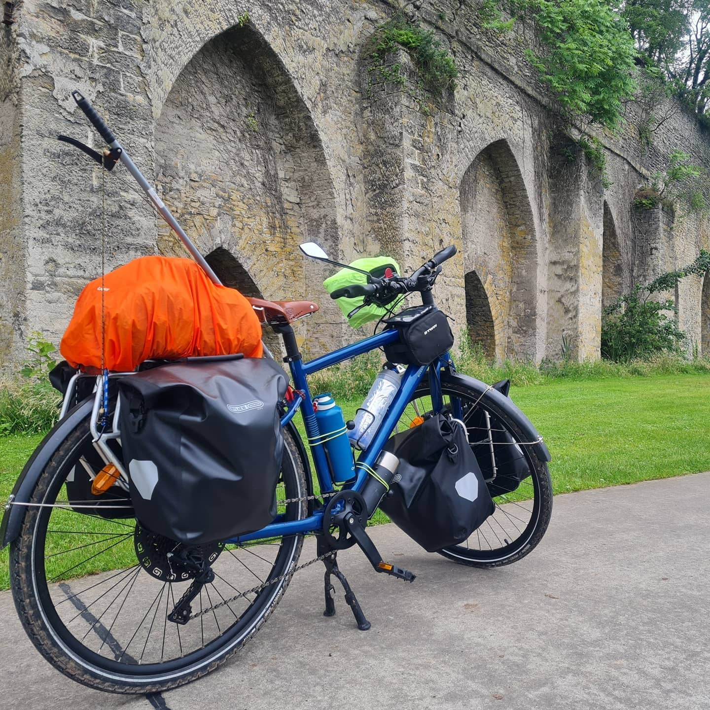
Aujourd'hui petit passage par la Belgique au niveau de Tournai,
une ville qui a du charme avec ses maisons aux briques rouges,
ses églises et cathédrales, le petit rayon de soleil de cette
journée sous la pluie et le vent !!! Sur la route on s'est fait
interpellé pour aider à retourner un cheval qui était malade du
fait d'avoir manger du pain de mie mouillé ! Alors attention ne
le faite pas ! Nous sommes ce soir à Roubaix chez un ami et
demain départ pour Lille !
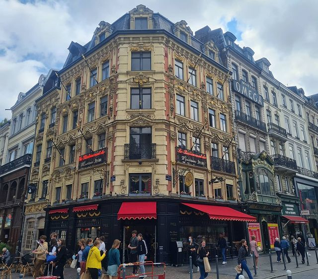
Petite journée pour nous ! Nous sommes sur Lille, et nous
avons déposé les vélos dans un lieu sur chez Sara qui nous
héberge ce soir ! Visite de la ville dans l'après midi avec
dégustation du plat typique! Nous avons retrouvé le soleil
enfin il était temps !
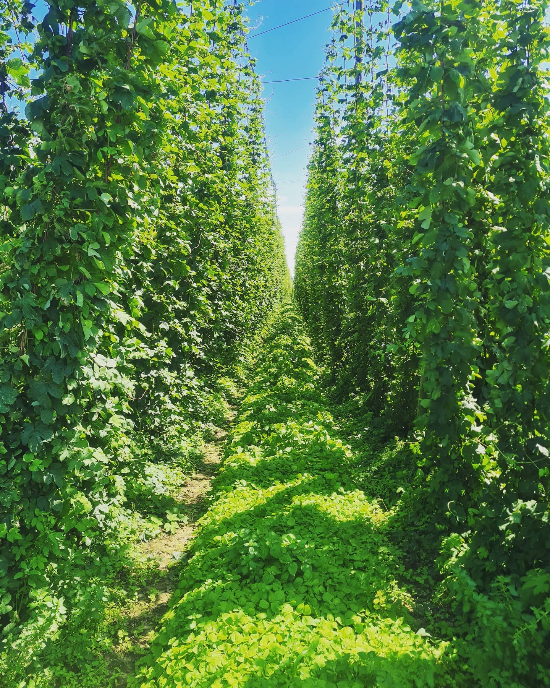
Nous sommes en Belgique et demain direction Dunkerque ! Il fait beau
mais pas chaud mais ça fait du bien ! Vivement demain pour voir enfin la mer !!!
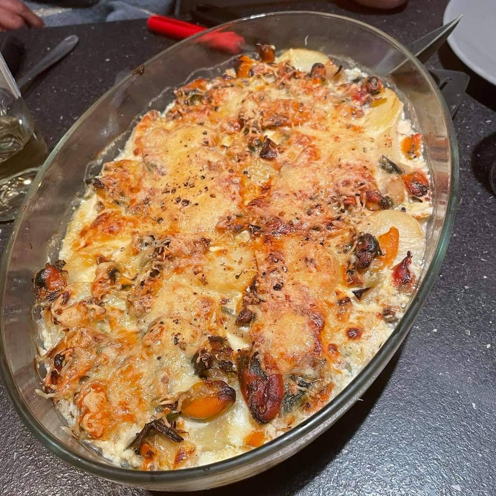
Ça y'est on est dans le Nord !!!! Nous avons été pris avec
nos hôtes d'hier soir pas eu le temps de mettre de nos
nouvelles ! Après 1h30 de recherche nous avons trouvé
quelqu'un quelqu'un à bien voulu nous héberger ! Alex et Do
qui nous ont accueilli petit gratin de moule au programme et
2 3 4 5 6.... verres pour passer une soirée plus qu'agréable !
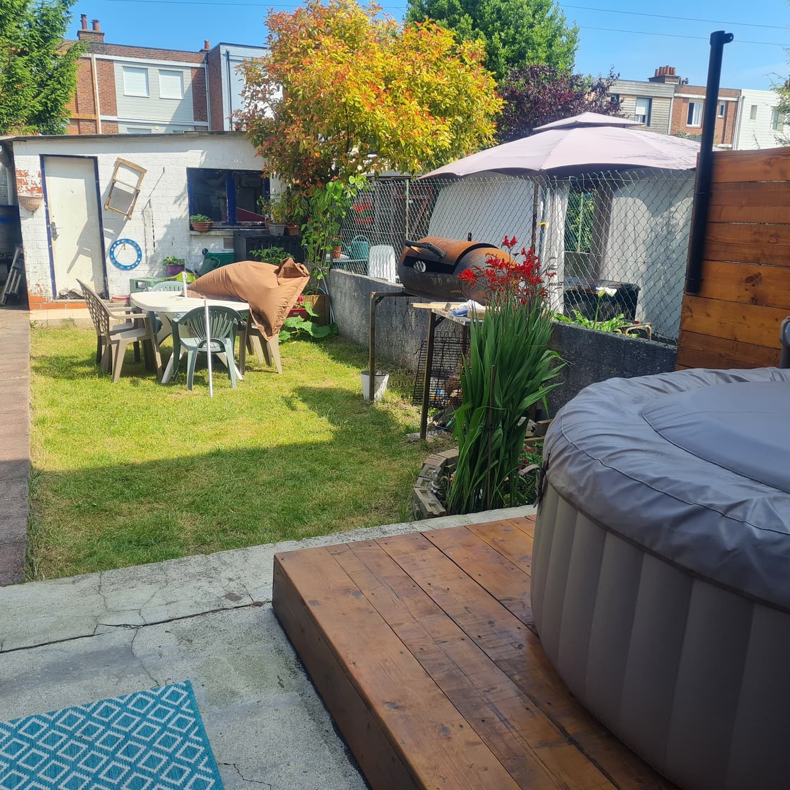
Nous sommes restés sur Dunkerque aujourd'hui pour profiter un
peu de la plage et du soleil avant de repartir sur Calais !
Nous avons eu la chance d'être accueilli le soir par Romuald
Aurélie et Andrea qui nous ont chouchouté ! Barbecue avec
chamalow grillé, apéro avec leur famille pour encore faire
plus de rencontres, que du bonheur ! Les habitants du nord
sont très chaleureux si on sait où sonner !!!! Merci encore
à eux pour nous avoir laisser les encombrer le temps d'une
soirée !
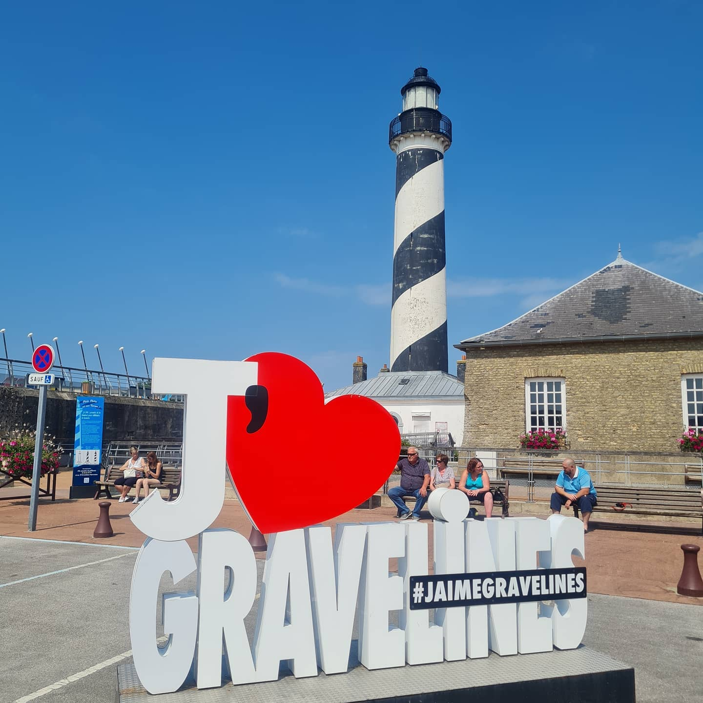
Arrêt sur Gravelines ce soir pour la nuit ! On s'est trouvé
un petit camping tranquille proche de la plage demain encore
une petite journée direction Calais !
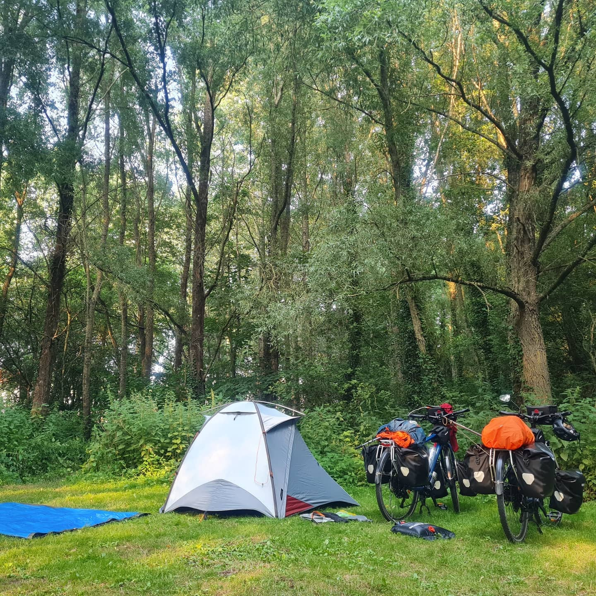
Coucou tout le monde !!! Nous sommes arrivés à Isques un
petit campement en forêt ce soir !!! Hier soir nous étions
dans un gîte à Coquelles proche de Calais, 5 min de la plage
c'était super chouette merci encore aux Mam's pour nous
l'avoir offert et merci à Caroline et son mari pour
l'hospitalité ! Le soleil reste avec nous c'est chouette !
Demain direction Le Touquet et Berck !
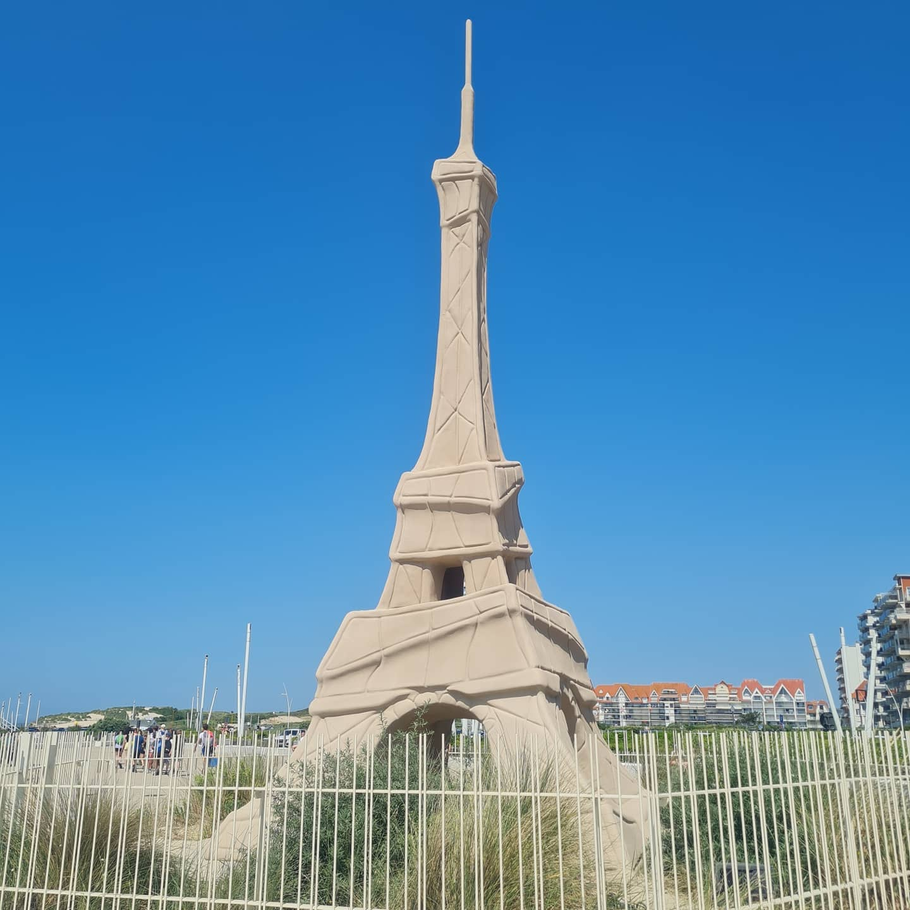
Une journée assez épuisante aujourd'hui sous le soleil ça se
voit non ahahahaha !!! On a fait un peu trempette dans la
Manche aujourd'hui au Touquet ! Ce soir on se pose proche de
Berck à Merlimont où on se fait loger par Emmanuel !
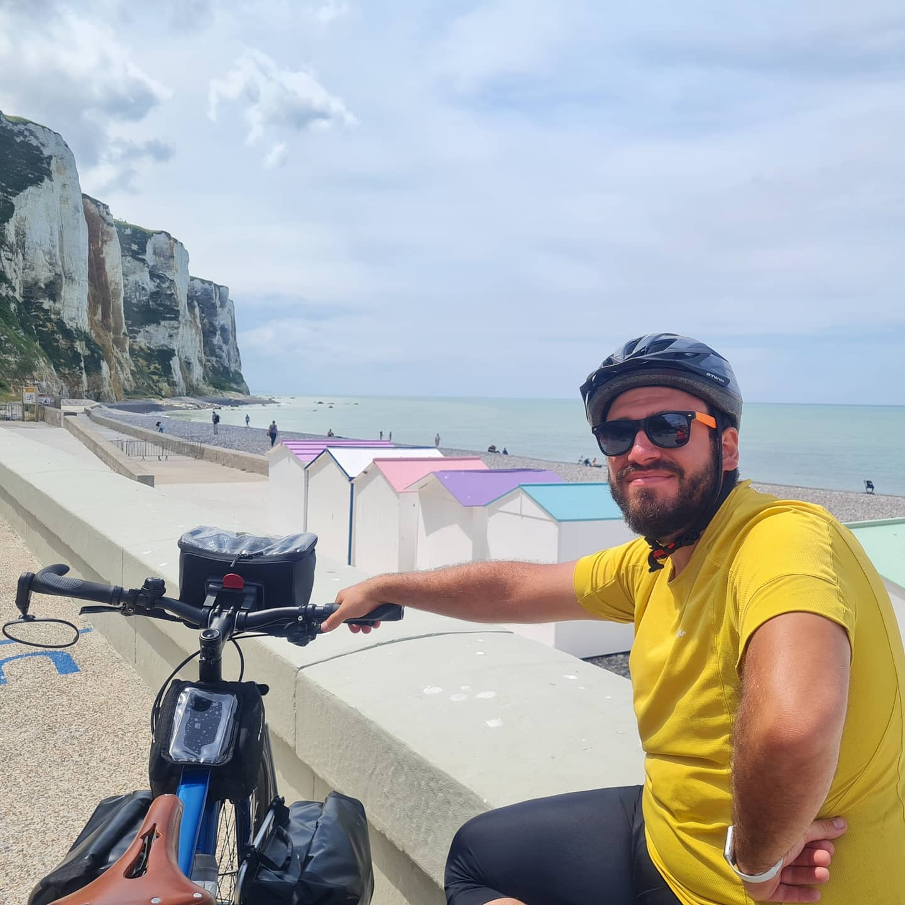
Reparti ce matin vers 12h de chez Manu une superbe soirée ! Aujourd'hui
passage par la baie de Somme ! Le soleil toujours avec nous ça fait du bien !
Demain ça sera autre chose ! Ce soir nuit en tente dans un petit village !
 Aujourd'hui nous avons parcouru 56km pour arriver à Dieppe! Nous nous sommes
arrêtés juste dans la ville d'avant pour éviter de se prendre
la sauce et oui la pluie nous guette ! Ce soir nous avons eu
la chance de tomber encore sur une famille super gentille
Marion et Loïc qui nous ont accueilli ! On a eu le droit à le
petit thé de bienvenu, et un repas chaud, en prime un
dessin !!! Une belle découverte de la ville du Tréport !
Les montées étaient rudes mais ça valait le détour !
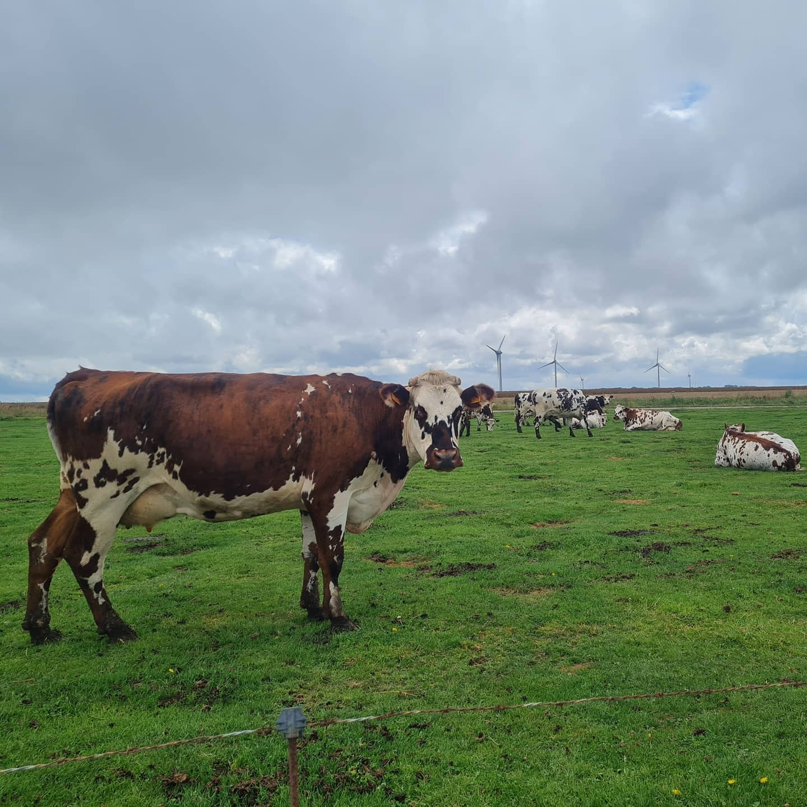
Coucou !!! Nous voilà en Normandie !!! Là on le sait c'est
sure nous avons vu les vaches normandes !!! Nous attendions
la pluie finalement nous avons eu de la chance ! 70km jusqu'à
Fécamp! Le soir nous avons été accueilli par Elodie et Antoine
des personnes super sympa qui nous ont ouvert leur porte pour
la nuit ! Ils sont venus nous chercher pour ne pas que l'on
rebrousse chemin et ils nous ont ramené ce matin !
La générosité des personnes que nous rencontrons nous
surprendra toujours ! Une superbe soirée entouré des animaux
de la ferme, chevaux, chèvres poules et les petits chiens !
Aujourd'hui direction Etretat on va prier pour que le soleil
se pointe !!!
Aujourd'hui nous avons parcouru 56km pour arriver à Dieppe! Nous nous sommes
arrêtés juste dans la ville d'avant pour éviter de se prendre
la sauce et oui la pluie nous guette ! Ce soir nous avons eu
la chance de tomber encore sur une famille super gentille
Marion et Loïc qui nous ont accueilli ! On a eu le droit à le
petit thé de bienvenu, et un repas chaud, en prime un
dessin !!! Une belle découverte de la ville du Tréport !
Les montées étaient rudes mais ça valait le détour !
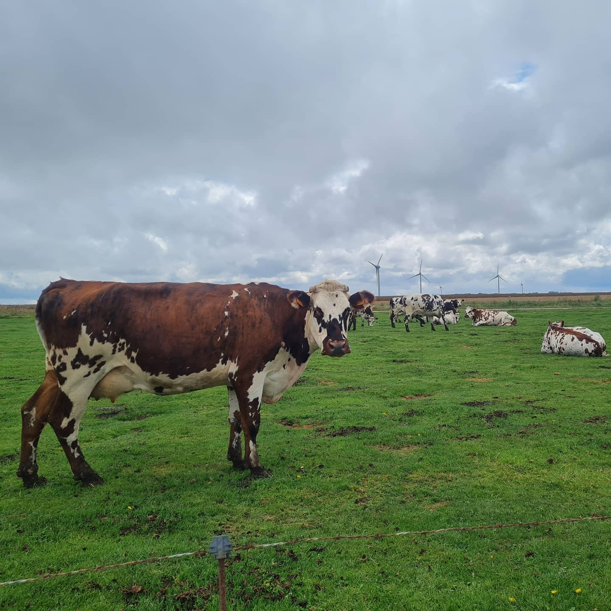
Coucou !!! Nous voilà en Normandie !!! Là on le sait c'est
sure nous avons vu les vaches normandes !!! Nous attendions
la pluie finalement nous avons eu de la chance ! 70km jusqu'à
Fécamp! Le soir nous avons été accueilli par Elodie et Antoine
des personnes super sympa qui nous ont ouvert leur porte pour
la nuit ! Ils sont venus nous chercher pour ne pas que l'on
rebrousse chemin et ils nous ont ramené ce matin !
La générosité des personnes que nous rencontrons nous
surprendra toujours ! Une superbe soirée entouré des animaux
de la ferme, chevaux, chèvres poules et les petits chiens !
Aujourd'hui direction Etretat on va prier pour que le soleil
se pointe !!!